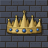
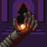

北の車家 ・ 紋章 雲を割って走る戦車の車輪
「まっすぐ、果てまで」
飛車が当主、香車が家臣を務める。鍛冶と兵の家で、武勲で成り上がった。貴族を嫌い、南に分かれた同族の不満にも理解がある。
九路の大陸で戦う二つの軍勢と、その中の人々の紹介です。駒の二つ名(「渡し船の新兵」など)は対局ごとに配られるので、ここでは家と立場、駒ごとの気質を紹介します。
すべては、勝った日から始まった。三十二年前、先々代の暁王と若き日のヴァルドラは肩を並べ、大陸を苦しめた旧帝を倒した。人々はこれを「暁の中興」と呼んだ。
だが勝利は、勝った者たちを分けた。宮廷の貴族たちは恩賞を自分たちで分け合い、血を流した兵たちには空約束だけが残った。不満を抱えた兵たちが担ぎ上げたのが、ヴァルドラだった。彼は宮廷を追い、始まりの王の冠から「一点の宝玉」を奪って、自らを玉将と名乗った。黄昏の帝国の始まりである。
帝国は南を平らげ、北へ迫った。先代の暁王は湊の戦いで討たれ、息子に遺訓を残した。「私が倒れれば、世は黄昏のものになる。それでも、義を失うな」。
名家を率いるのは飛車と角行だけです。家の名は駒の字から取ります。飛車と香車は「車」の字を持つので車家、角行は成ると龍馬になり、桂馬と「馬」の字を分け合うので馬家です。当主は飛車と角行、家臣は香車と桂馬。金将・銀将・歩兵は家を持ちません。
車家と馬家は、三十二年前の中興のあと北と南に分かれました。いまは同じ家の者が両軍に分かれて戦っています。
北の最後の砦に残った、王と十九の兵。千日の包囲に耐え、夜明けの鐘とともに最後の戦いに出る。捕虜を仲間として迎えるのが流儀で、軍の半分がかつての敵兵になる日も来るかもしれない。

北の辺境で育った若き王。民の前で剣を抜いたことはない。幼いころは遊びの中でも帝国の兵を追う真似ばかりして、父の遺訓を胸に育った。掲げる「王」の字に点はない。「点ひとつで民の上に立てるものか」。その優しさを、古い家の者たちは頼もしくも危うくも見ている。
飛車が当主、香車が家臣を務める。鍛冶と兵の家で、武勲で成り上がった。貴族を嫌い、南に分かれた同族の不満にも理解がある。
角行が当主、桂馬が家臣を務める。川沿いの商いの家で、中興のとき宮廷に恩賞を奪われた側だった。南の馬家との縁はまだ切れておらず、寝返りの噂が絶えない。
先代の暁王に最後まで従った近衛。王家への忠義は誰より厚いが、若き王の甘さを危ぶんでいる。北の馬家の者を信用していない。
宝玉が来る前、「南の将軍」と呼ばれていたころのヴァルドラの軍にいた老兵。解放軍でただ一人、黄昏帝の昔の顔を語ることができる。
渡し船、粉挽き小屋、峠の茶屋。出自は村や暮らしの場所で呼ばれる。数は多く、すぐ揺らぐが、最初に敵陣へ入って昇格した一人は「と金の英雄」小吉として語り継がれる。
三十年で大陸の南半分を平らげた帝国。宝玉の光が兵の心を縛り、帝国の兵は一度も主を裏切ったことがない。ただ、その光の下で何を見ているのかは、兵たち自身にもわからない。

かつては飢えから民を救った名君だった。報われない兵たちの声に担がれて玉座に着き、宝玉を手にしてから人が変わった。今は夜ごと宝玉を見つめて黙っている。勝つたびに、勝利が重くなる。「余は、正しかったのか」。
飛車が当主、香車が家臣を務める。帝の武勇を支えた武門で、帝への忠誠は本物だが、その苛烈さは民に恐れられている。北の車家を裏切り者と呼ぶ。
角行が当主、桂馬が家臣を務める。帝国の宰相家で、帝が宝玉に呑まれていくのを冷ややかに見つめ、宝玉を狙っている。帝国が勝っても、この家の動きは止まらない。
三十二年前は中興の側で戦った。宝玉が来る前の帝を知る最後の者で、帝がいつかその顔に戻ってくれると信じている。
第三兵舎、宮廷厨房、関所番。出自は兵舎や持ち場で呼ばれる。宝玉の光だけを見ていろと教えられているが、帝国の外に家族を残してきた者も多い。最初に昇格した一人は与作と呼ばれる。
同じ種類の駒は、軍が違っても気質が似ています。台詞はこの気質と、その駒の家や出自に沿って変わります。
| 駒 | 兵種 | 気質 | 昇格すると |
|---|---|---|---|
| 王将・玉将 | 暁王・黄昏帝 | 軍の主。重々しく、言葉が少ない | 昇格しない |
| 飛車 | 猛将 | 豪快な武人。縦にも横にも、自分の庭だと言い張る | 龍王 |
| 角行 | 術師 | 皮肉屋。斜めの理屈で物を言い、説得されても屁理屈で粘る | 天馬術師(龍馬) |
| 金将 | 近衛 | 忠義一筋。王のそばを離れたがらず、囲いを進言する | 昇格しない |
| 銀将 | 忍び | 老練。斜め後ろへの退き際を誇る | 上忍 |
| 桂馬 | 騎兵 | 軽口で跳ねる。後ろに戻れないのを嘆く | 重騎兵 |
| 香車 | 槍兵 | 一直線。前しか見ず、説得には即答で断る | 重槍兵 |
| 歩兵 | 新兵 | 若く、数が多い。揺らぎやすいが、昇格すると調子に乗る | 古参兵(と金) |
若きヴァルドラとともに旧帝を倒し、暁の中興を成した。恩賞を独り占めした宮廷を抑えきれなかった。
レオニスの父。湊の戦いで討たれた。「それでも、義を失うな」。
名は残っていない。同じ戦を何度も語り直したので、どれが本当かは誰も知らない。